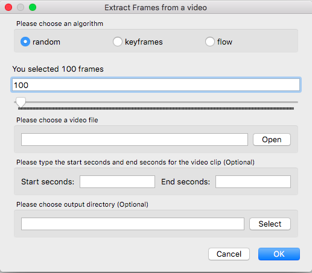

Extract Frames
Extract desired number of frames from a video based on optical flow
python annolid/main.py -v /path/to/my_video.mp4 --extract_frames=100
The above command will extract 100 frames from the provided video and save them to a default folder called extracted_frames in the current annolid repo folder.
Or you can use the GUI as follows.

Display optical flow while extracting frames with –show_flow=True
python annolid/main.py -v /path/to/my_video.mp4 --extract_frames=100 --show_flow=True
Save all the frames as images
python annolid/main.py -v /path/to/my_video.mp4 --extract_frames=-1
Select frames randomly by reservoir sampling
python annolid/main.py -v /path/to/my_video.mp4 --extract_frames=100 --algo=random
Extract all the key frames from a video used by the compression methods
:warning: This method may not work for some videos with certain compression methods.
python main.py -v /path/to/my_video.mp4 --algo=keyframes --extract_frames=-1